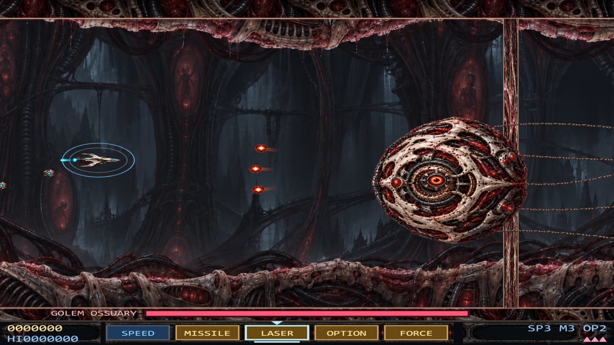
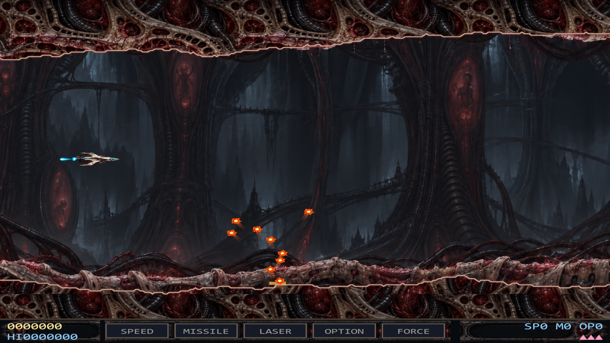
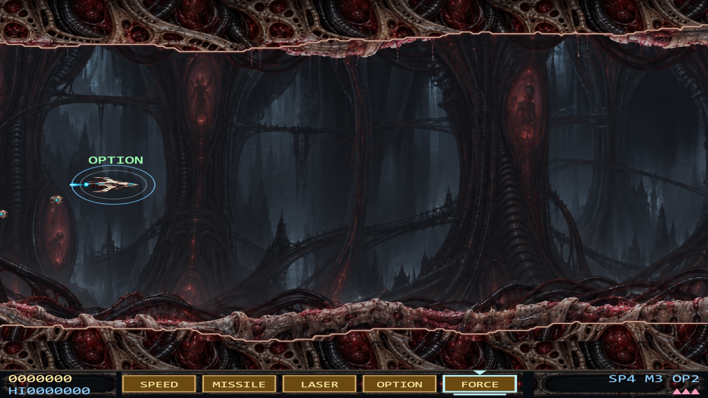
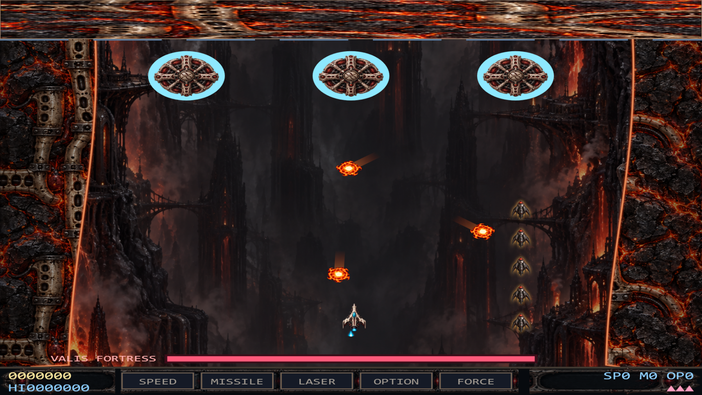
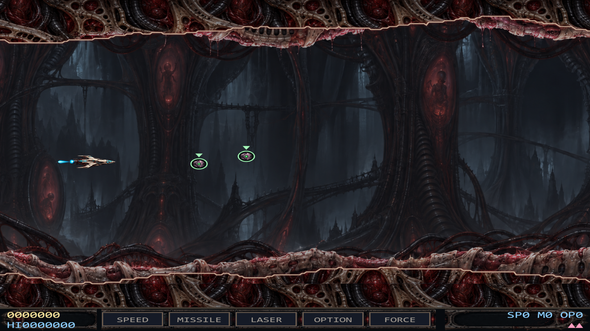
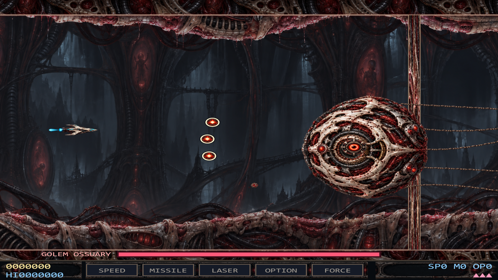

Painted plasma bolts replace the first boss's red squares. Shared boss and enemy shots, prominence particles and fortress fireballs use the same warm hostile palette with a compact bright core and faint directional wake. Gold upgrades retain their color; a steady cyan frame, pointer and underline identify the selected slot.
Options already survived ordinary deaths. The old edge behavior could let them disappear before respawn, especially at the bottom of vertical stages. Green recovery markers now identify them; drops remain inside the visible corridor during death and for 1.5 seconds after respawn, then slowly drift offscreen. A visible drop no longer expires after 12 seconds.
16 targeted checks passed, including normal and edge death/recovery in all six stages, gold selection pixels for every slot, visible prominence flames, rendering fallbacks and drop lifetime. No browser errors. QA screenshots use frame stepping and invincibility.
Play local build · Replaceable art library · Exact built-in imagegen prompts and new asset paths · Targeted test report · Original death/recovery behavior · Full game review





